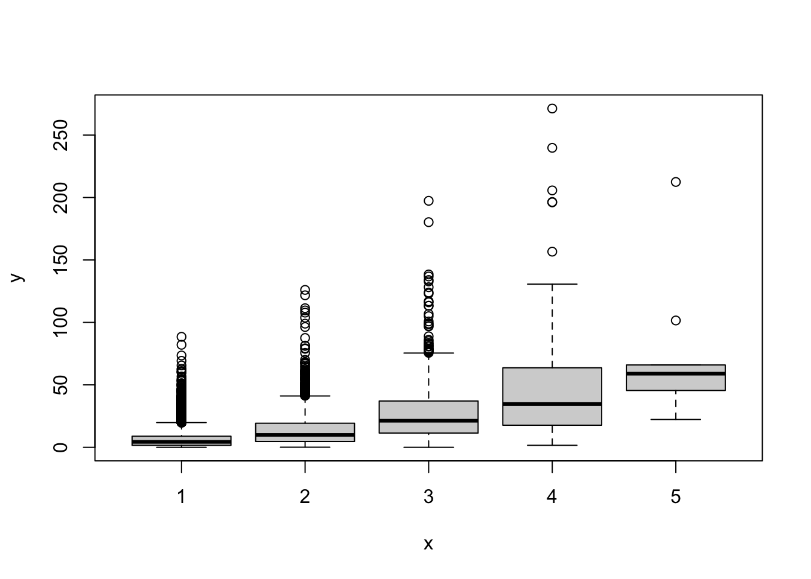

Tuesday, January 17, 2023
“If you give your code to a competent programmer who’s never seen it and they ask any questions, you’ve failed. Every question is a defect.” — Allen Holub
Class notes
You should now have a set of class notes as lesson files in your own GitHub repository and on your laptop. Note that these files are based on last semester’s class. I will update them as we proceed through the semester
So at the start of each class (Sync from GitHub then Pull from RStudio)
Go to
https://github.com/[your GitHub username]Select the
Sync forkbutton under the greenCodebuttonClick
Update branchOpen the Folder
ASS-2023-[your name]on your DesktopOpen the file
ASS-2023.RprojUnder the
Gittab select blue arrow (pointing down) toPulldown changes from your GitHub repositorySelect the
XX-Lesson.Rmdfile
Note: If you see a yellow caution sign when you open the lesson file, download the required packages
Don’t push and rename your files
- You can add notes to the lesson files (
_.Rmd) on your computer - You can add new files to your local directory
- These changes stay on your computer only
- Don’t push them to your GitHub repository!
At the end of the semester you can push your notes to your repository
- Check the
Stagedbutton under theGittab for all files you want to push - Then select the
Commitbutton - Add a note to the
Commit messagesection (e.g., my updates) - Select the green arrow (pointing up) to
Pushchanges to your GitHub - The first time you do this you need to include your GitHub username and Personal access token
Get a personal access token
- Go to your GitHub account
- In the far upper-right pull down menu (next to your avatar) select
SettingsthenDeveloper settings - In the left menu select
Personal access tokens > Tokens (classic) - Follow instructions to generate a personal access toke (PAT)
- Use your PAT as your password when pushing changes made on your computer to your GitHub account
Finally you can unfork your repository (see the instructions here https://nickymeuleman.netlify.app/blog/unfork-github-repo)
New resource for applied spatial statistics https://geocompx.org/
Using R
Consider a set of integers representing the number of hurricanes making landfall in the United States from the last ten years. You assign the values to an object and print the contents of the object by wrapping the line of code in parentheses
( d <- c(2, 3, 0, 3, 1, 0, 0, 1, 2, 1) )## [1] 2 3 0 3 1 0 0 1 2 1Suppose you are interested in the inter annual variability in the set of landfall counts. The variance is computed as
\[ \hbox{var}(x) = \frac{(x_1 - \bar x)^2 + (x_2 - \bar x)^2 + \cdots + (x_n - \bar x)^2}{n-1} = \frac{1}{n-1}\sum_{i=1}^n (x_i - \bar x)^2 \]
Note: the markdown file recognizes math written in LaTeX. The formula for the variance is written using LaTeX notation gets rendered as a math equation (like you see in a textbook) See https://www.overleaf.com/learn/latex/Mathematical_expressions
Although the var() function computes this, here you do this using simple functions. The key is to find the squared differences and then sum these values
x <- d
xbar <- mean(x)
x - xbar## [1] 0.7 1.7 -1.3 1.7 -0.3 -1.3 -1.3 -0.3 0.7 -0.3(x - xbar)^2## [1] 0.49 2.89 1.69 2.89 0.09 1.69 1.69 0.09 0.49 0.09sum((x - xbar)^2)## [1] 12.1n <- length(x)
n## [1] 10sum((x - xbar)^2)/(n - 1)## [1] 1.344444var(x)## [1] 1.344444Elements in a vector object must all have the same type. This type can be numeric, as in counts, character strings, as in
simpsons <- c('Homer', 'Marge', 'Bart', 'Lisa', 'Maggie')
simpsons## [1] "Homer" "Marge" "Bart" "Lisa" "Maggie"Character strings are made with matching quotes, either double, ", or single, '. If you mix types the values will be coerced into a common type, which is usually a character string. Arithmetic operations do not work on character strings
Returning to the land falling hurricane counts. Suppose the National Hurricane Center (NHC) reanalyzes a storm, and that the 6th year of the decade is a 1 rather than a 0 for the number of landfalls. In this case you change the sixth element to have the value 1
d[6] <- 1You assign to the 6th year of the decade a value of one. The square brackets [] are used to reference elements of the data vector
Key: Parentheses () are used by functions and square brackets [] are used by data objects
d## [1] 2 3 0 3 1 1 0 1 2 1d[2]## [1] 3d[-4]## [1] 2 3 0 1 1 0 1 2 1d[c(1, 3, 5, 7, 9)]## [1] 2 0 1 0 2The first line prints all the elements of the vector d. The second prints only the 2nd value of the vector. The third prints all but the 4th value. The fourth prints the values with odd element numbers
To create structured data, for example the integers 1 through 99 you can use the : operator
1:99
rev(1:99)
99:1The seq() function is more general. You specify the sequence interval with the by = or length = arguments
seq(from = 1, to = 9, by = 2)## [1] 1 3 5 7 9seq(from = 1, to = 10, by = 2)## [1] 1 3 5 7 9seq(from = 1, to = 9, length = 5)## [1] 1 3 5 7 9The rep() function is used to create repetitive sequences. The first argument is a value or vector that you want repeated and the second argument is the number of times you want it repeated
rep(1, times = 10)## [1] 1 1 1 1 1 1 1 1 1 1rep(simpsons, times = 2)## [1] "Homer" "Marge" "Bart" "Lisa" "Maggie" "Homer" "Marge" "Bart"
## [9] "Lisa" "Maggie"In the second example the vector simpsons containing the Simpson characters is repeated twice
To repeat each element of the vector use the each = argument
rep(simpsons, each = 2)## [1] "Homer" "Homer" "Marge" "Marge" "Bart" "Bart" "Lisa" "Lisa"
## [9] "Maggie" "Maggie"More complicated patterns can be repeated by specifying pairs of equal length vectors. In this case, each element of the first vector is repeated the corresponding number of times given by the element in the second vector
rep(c("long", "short"), times = c(2, 3))## [1] "long" "long" "short" "short" "short"To find the maximum number of landfalls during the first decade you type
max(d)## [1] 3What years had the maximum?
d == 3## [1] FALSE TRUE FALSE TRUE FALSE FALSE FALSE FALSE FALSE FALSENotice the double equals signs (==). This is a logical operator that tests each value in d to see if it is equal to 3. The 2nd and 4th values are equal to 3 so TRUEs are returned
Think of this as asking R a question. Is the value equal to 3? R answers all at once with a vector of TRUE’s and FALSE’s
What years had more than 2 hurricanes?
d > 2## [1] FALSE TRUE FALSE TRUE FALSE FALSE FALSE FALSE FALSE FALSENow the question is how do you get the vector element corresponding to the TRUE values? That is, which years have 3 landfalls?
which(d == 3)## [1] 2 4The function which.max() can be used to get the first maximum
which.max(d)## [1] 2You might be interested in the total number of landfalls in the decade or the number of years in a decade without a landfall
sum(d)## [1] 14sum(d == 0)## [1] 2With a logical vector the TRUE elements are treated as having a value of 1 and the FALSE elements are treated as having a value of 0
The rm() function removes an object from your environment
rm(d)Data frames
Spatial data frames are used throughout this course. A spatial data frame is a data frame plus information on where the observations were taken
A data frame stores data in a tabular format like a spreadsheet. It is a list of vectors each with the same length. It has column names (and sometimes row names)
For example, you create a data frame object df containing three vectors n, s, b each with three elements using the data.frame() function
n <- c(2, 3, 5)
s <- c("aa", "bb", "cc")
b <- c(TRUE, FALSE, TRUE)
df <- data.frame(n, s, b)To see check on the type of object you use the class() function with the name of the object inside the parentheses
class(df)## [1] "data.frame"The object df is of class data.frame. Note that the object name shows up in our Environment under Data and it includes a little blue arrow indicating that you can view it by clicking on the row
The data frame shows up as a table (like a spreadsheet) in the View() mode (see the command in the console below). This is not advised for large data frames!
The top line of the table is called the header. Each line below the header contains a row of data, which begins with the name (or number) of the row followed by the data values
Each data element is in a cell. To retrieve a data value from a cell, you enter its row and column coordinates in that order in the single square bracket [] operator and separated by a column
df[row, column]
Here is the cell value from the first row, second column of df
df[1, 2]## [1] "aa"You print the column names (located in the top row in the View() mode) with the names() function
names(df)## [1] "n" "s" "b"The list of names is a vector of length three containing the elements n, s, and b in that order
You access individual columns of a data frame as vectors by appending the dollar sign ($) to the object name. For example, to print the values of the column labeled s type
df$s## [1] "aa" "bb" "cc"Many packages include example data frames. The data frame called mtcars, for instance, contains information extracted from the 1974 Motor Trend US magazine, and comprises fuel consumption and 10 aspects of automobile design and performance for 32 automobiles (1973–74 models)
class(mtcars)## [1] "data.frame"names(mtcars)## [1] "mpg" "cyl" "disp" "hp" "drat" "wt" "qsec" "vs" "am" "gear"
## [11] "carb"The number of data rows and data columns in the data frame are printed using the nrow() and ncol() functions
nrow(mtcars)## [1] 32ncol(mtcars)## [1] 11Further details of built-in data frames like mtcars is available in the documentation accessed with the help() (or ?) function
help(mtcars)If you type the name of the data frame in the console all the data are printed
mtcars## mpg cyl disp hp drat wt qsec vs am gear carb
## Mazda RX4 21.0 6 160.0 110 3.90 2.620 16.46 0 1 4 4
## Mazda RX4 Wag 21.0 6 160.0 110 3.90 2.875 17.02 0 1 4 4
## Datsun 710 22.8 4 108.0 93 3.85 2.320 18.61 1 1 4 1
## Hornet 4 Drive 21.4 6 258.0 110 3.08 3.215 19.44 1 0 3 1
## Hornet Sportabout 18.7 8 360.0 175 3.15 3.440 17.02 0 0 3 2
## Valiant 18.1 6 225.0 105 2.76 3.460 20.22 1 0 3 1
## Duster 360 14.3 8 360.0 245 3.21 3.570 15.84 0 0 3 4
## Merc 240D 24.4 4 146.7 62 3.69 3.190 20.00 1 0 4 2
## Merc 230 22.8 4 140.8 95 3.92 3.150 22.90 1 0 4 2
## Merc 280 19.2 6 167.6 123 3.92 3.440 18.30 1 0 4 4
## Merc 280C 17.8 6 167.6 123 3.92 3.440 18.90 1 0 4 4
## Merc 450SE 16.4 8 275.8 180 3.07 4.070 17.40 0 0 3 3
## Merc 450SL 17.3 8 275.8 180 3.07 3.730 17.60 0 0 3 3
## Merc 450SLC 15.2 8 275.8 180 3.07 3.780 18.00 0 0 3 3
## Cadillac Fleetwood 10.4 8 472.0 205 2.93 5.250 17.98 0 0 3 4
## Lincoln Continental 10.4 8 460.0 215 3.00 5.424 17.82 0 0 3 4
## Chrysler Imperial 14.7 8 440.0 230 3.23 5.345 17.42 0 0 3 4
## Fiat 128 32.4 4 78.7 66 4.08 2.200 19.47 1 1 4 1
## Honda Civic 30.4 4 75.7 52 4.93 1.615 18.52 1 1 4 2
## Toyota Corolla 33.9 4 71.1 65 4.22 1.835 19.90 1 1 4 1
## Toyota Corona 21.5 4 120.1 97 3.70 2.465 20.01 1 0 3 1
## Dodge Challenger 15.5 8 318.0 150 2.76 3.520 16.87 0 0 3 2
## AMC Javelin 15.2 8 304.0 150 3.15 3.435 17.30 0 0 3 2
## Camaro Z28 13.3 8 350.0 245 3.73 3.840 15.41 0 0 3 4
## Pontiac Firebird 19.2 8 400.0 175 3.08 3.845 17.05 0 0 3 2
## Fiat X1-9 27.3 4 79.0 66 4.08 1.935 18.90 1 1 4 1
## Porsche 914-2 26.0 4 120.3 91 4.43 2.140 16.70 0 1 5 2
## Lotus Europa 30.4 4 95.1 113 3.77 1.513 16.90 1 1 5 2
## Ford Pantera L 15.8 8 351.0 264 4.22 3.170 14.50 0 1 5 4
## Ferrari Dino 19.7 6 145.0 175 3.62 2.770 15.50 0 1 5 6
## Maserati Bora 15.0 8 301.0 335 3.54 3.570 14.60 0 1 5 8
## Volvo 142E 21.4 4 121.0 109 4.11 2.780 18.60 1 1 4 2Instead, you use the function head(), which prints the first six rows, or str(), which lists all the columns by data type
head(mtcars)## mpg cyl disp hp drat wt qsec vs am gear carb
## Mazda RX4 21.0 6 160 110 3.90 2.620 16.46 0 1 4 4
## Mazda RX4 Wag 21.0 6 160 110 3.90 2.875 17.02 0 1 4 4
## Datsun 710 22.8 4 108 93 3.85 2.320 18.61 1 1 4 1
## Hornet 4 Drive 21.4 6 258 110 3.08 3.215 19.44 1 0 3 1
## Hornet Sportabout 18.7 8 360 175 3.15 3.440 17.02 0 0 3 2
## Valiant 18.1 6 225 105 2.76 3.460 20.22 1 0 3 1str(mtcars)## 'data.frame': 32 obs. of 11 variables:
## $ mpg : num 21 21 22.8 21.4 18.7 18.1 14.3 24.4 22.8 19.2 ...
## $ cyl : num 6 6 4 6 8 6 8 4 4 6 ...
## $ disp: num 160 160 108 258 360 ...
## $ hp : num 110 110 93 110 175 105 245 62 95 123 ...
## $ drat: num 3.9 3.9 3.85 3.08 3.15 2.76 3.21 3.69 3.92 3.92 ...
## $ wt : num 2.62 2.88 2.32 3.21 3.44 ...
## $ qsec: num 16.5 17 18.6 19.4 17 ...
## $ vs : num 0 0 1 1 0 1 0 1 1 1 ...
## $ am : num 1 1 1 0 0 0 0 0 0 0 ...
## $ gear: num 4 4 4 3 3 3 3 4 4 4 ...
## $ carb: num 4 4 1 1 2 1 4 2 2 4 ...Consider the data frame studentdata from the {LearnBayes} package. To access this data frame, first install the package with the install.packages() function
You put the name of the package {LearnBayes} in quotes (single or double). Then to make the functions from the package available to your current session use the library() function with the name of the package (unquoted) inside the parentheses
if(!require(LearnBayes)) install.packages(pkgs = "LearnBayes", repos = "http://cran.us.r-project.org")## Loading required package: LearnBayeslibrary(LearnBayes)Note: The argument repos = in the install.packages() function directs where the package is obtained on CRAN (comprehensive R archive network). The CRAN repository is set automatically when using RStudio and you can install packages by clicking on Packages > Install in the lower-right panel
You need to specify the repository. When you render the markdown file (using the Knit button) you don’t want to install packages that already exist on your computer so you add the conditional if() function that says “only install the package IF it is not (!) available”
Make a copy of the data frame by assigning it to an object with the name df and print the first six rows using the head() function
df <- studentdata
head(df)## Student Height Gender Shoes Number Dvds ToSleep WakeUp Haircut Job Drink
## 1 1 67 female 10 5 10 -2.5 5.5 60 30.0 water
## 2 2 64 female 20 7 5 1.5 8.0 0 20.0 pop
## 3 3 61 female 12 2 6 -1.5 7.5 48 0.0 milk
## 4 4 61 female 3 6 40 2.0 8.5 10 0.0 water
## 5 5 70 male 4 5 6 0.0 9.0 15 17.5 pop
## 6 6 63 female NA 3 5 1.0 8.5 25 0.0 waterData frames are like spreadsheets with rows and columns. Each row is an observation (here each row is a student in an intro stats class at Bowling Green State University) and each column is a variable. Here the variables are answers to questions like what is your height, choose a number between 1 and 10, what time did you go to bed last night, etc
The names of the columns are printed using the names() function
names(df)## [1] "Student" "Height" "Gender" "Shoes" "Number" "Dvds" "ToSleep"
## [8] "WakeUp" "Haircut" "Job" "Drink"All columns are of the same length, but not all students answered all questions so some of the data frame cells contain the missing-value indicator NA (not available)
Values in a data frame stored in rows and columns and are accessed with bracket notation [row, column] where row is the row number and column is the column number like a matrix
For example here you specify the value in the 10th row and 2nd column (Height column) of the df data frame
df[10, 2]## [1] 65By specifying only the row index and leaving the column index blank you get all values in that row, which corresponds to all the responses given by the 10th student
df[10, ]## Student Height Gender Shoes Number Dvds ToSleep WakeUp Haircut Job Drink
## 10 10 65 male 10 7 22 2.5 8.5 12 0 milkDrink preference was one of the questions. Responses across all students are available in the column labeled Drink as a vector of character values. You list the various drink preferences by typing
df$Drink## [1] water pop milk water pop water water pop water milk milk water
## [13] pop milk pop water water pop water water water water water milk
## [25] pop water water pop water water water water pop water water water
## [37] pop milk pop water water water pop milk water water water pop
## [49] pop water milk pop pop water water pop milk pop pop water
## [61] water water water water water milk pop pop pop water water water
## [73] pop water pop pop water pop pop milk water pop water water
## [85] milk pop water water pop water water water milk water pop water
## [97] pop pop pop water water pop water pop milk milk water water
## [109] water water water pop water milk milk milk water milk pop water
## [121] pop pop pop pop water water water water water water milk water
## [133] pop milk water water water water water <NA> pop water water pop
## [145] milk milk water water pop water water water pop water <NA> water
## [157] water water water water milk milk water milk water water milk water
## [169] pop pop pop water pop pop water water milk milk water water
## [181] water pop pop water water pop pop water water milk water water
## [193] milk <NA> water pop milk pop milk water water water water water
## [205] water pop pop water milk water milk water milk water milk water
## [217] milk water pop water water milk water water pop milk milk water
## [229] milk water pop pop pop water water milk pop milk water milk
## [241] water water pop water water water pop pop water water pop water
## [253] water milk water pop water pop milk milk pop pop water water
## [265] water pop pop milk water water water water milk milk water water
## [277] milk milk milk pop water water <NA> water water water pop milk
## [289] water water pop water water milk pop milk milk water water water
## [301] pop water water <NA> water water water water water pop water water
## [313] water water pop water water water milk milk pop water water water
## [325] water water pop pop milk milk water water pop pop pop pop
## [337] water milk water water pop milk pop water water water pop water
## [349] water water water water water <NA> pop pop water milk water water
## [361] milk water water pop water water water water water water pop water
## [373] water milk water water milk milk milk water water water water pop
## [385] water water pop water pop milk pop water water <NA> water water
## [397] water water milk water pop milk water water water water water milk
## [409] pop pop pop water pop milk water water milk milk pop water
## [421] milk water pop milk water water water water pop water pop pop
## [433] pop milk pop water milk pop water pop pop pop water water
## [445] water water water water pop milk water water water pop milk milk
## [457] pop pop water water milk water milk pop water water water water
## [469] pop water milk water water water water water milk milk water water
## [481] pop water water milk water milk water pop pop water water pop
## [493] pop pop milk water water pop water water water water pop water
## [505] pop milk water <NA> milk water pop water water milk water water
## [517] water water water milk water water pop water pop water milk milk
## [529] milk milk pop water pop milk <NA> milk pop water water pop
## [541] milk pop water milk water pop water pop water pop water water
## [553] pop milk water water water water <NA> water water pop pop milk
## [565] water milk pop pop water water water pop pop pop pop water
## [577] water water water water pop pop water pop water water water water
## [589] milk water water water water pop pop water water water water water
## [601] water water pop water water <NA> milk pop water water water pop
## [613] water pop water pop water water pop pop water pop water milk
## [625] water pop pop pop water milk pop water pop water water milk
## [637] water water water water water water water pop pop pop pop water
## [649] pop water milk water water pop pop pop water
## Levels: milk pop waterSome students left that response blank and therefore the response is coded with the missing-value indicator
The variable type depends on the question asked. For example, answers given to the question of student height result in a numeric variable, answers given to the question about drink preference result in a character (or factor) variable
For integer, character, and factor variables you summarize the set of responses with the table() function
table(df$Drink)##
## milk pop water
## 113 178 355There are 113 students who prefer milk, 178 prefer soda, and 355 prefer water
Here you use theplot() method to make a draft plot of this table
plot(x = df$Drink)
Notice that the sum of the responses is 646, which is less than the total number of students (657).
Students who left that question blank are ignored in the table() function. To include the missing values you add the argument useNA = "ifany" to the table() function.
table(df$Drink,
useNA = "ifany")##
## milk pop water <NA>
## 113 178 355 11Note: When you want code executed directly within the text you separate the code using single back ticks. This is useful when you write reports that need periodic updates when new data becomes available. Instead if you hard code the values in the text then you need to search the document for these values during each update of the report
Suppose you are interested in examining how long students reported sleeping during the night. This was not asked directly. You compute it from the ToSleep and WakeUp times columns. You assign the result of the difference to a column we call SleepHrs
df$SleepHrs <- df$WakeUp - df$ToSleep
head(df)## Student Height Gender Shoes Number Dvds ToSleep WakeUp Haircut Job Drink
## 1 1 67 female 10 5 10 -2.5 5.5 60 30.0 water
## 2 2 64 female 20 7 5 1.5 8.0 0 20.0 pop
## 3 3 61 female 12 2 6 -1.5 7.5 48 0.0 milk
## 4 4 61 female 3 6 40 2.0 8.5 10 0.0 water
## 5 5 70 male 4 5 6 0.0 9.0 15 17.5 pop
## 6 6 63 female NA 3 5 1.0 8.5 25 0.0 water
## SleepHrs
## 1 8.0
## 2 6.5
## 3 9.0
## 4 6.5
## 5 9.0
## 6 7.5Now you have a new numeric variable in the data frame called SleepHrs
You can’t table numeric variables, but the summary() method prints a set of summary statistics for the set of values
summary(df$SleepHrs)## Min. 1st Qu. Median Mean 3rd Qu. Max. NA's
## 2.500 6.500 7.500 7.385 8.500 12.500 4The average number of hours slept is 7.4 with a maximum of 12.5 and a minimum of 2.5. There are four students that did not answer either when they went to sleep or when they woke up questions
You use the hist() function to plot a histogram of sleep hours. The function takes as input a vector of values
hist(df$SleepHrs)
The function divides the number of sleep hours into one-hour bins and counts the number of students whose reported sleep hours falls into each bin. For example based on when they said they went to sleep and when the said they woke up, about 100 students slept between five and six hours the night before the survey
Is the amount of sleep for a student related to when they go to bed? If you place numeric variables on the x and y axes then you get a scatter plot
plot(x = df$ToSleep,
y = df$SleepHrs)
The ToSleep variable is centered on midnight so that -2 means a student went to sleep at 10p
You describe the decreasing relationship with a line through the points. The least-squares line is fit using the lm() function and the line is drawn on the existing plot with the abline() function applied to the linear regression object model.
model <- lm(SleepHrs ~ ToSleep,
data = df)
plot(x = df$ToSleep,
y = df$SleepHrs)
abline(model)
Getting data into R
You often start a research project by getting data into R. The file is on your computer or in the cloud. Secondary source data should be imported directly from repositories on the Web. When there is no direct link or API (application programming interface) to the repository, you need to first download the data
For example, consider the annually updated reports of tornadoes in the United States. The data repository is the Storm Prediction Center (SPC) https://www.spc.noaa.gov/wcm/index.html#data
Here you are interested in the file 1950-2021_actual_tornadoes.csv. First download the file from the site with the download.file() function specifying the location (url =) and a name you want the file to be called on your computer (destfile =)
download.file(url = "http://www.spc.noaa.gov/wcm/data/1950-2021_actual_tornadoes.csv",
destfile = here::here("data", "Tornadoes.csv"))A file called Tornadoes.csv is now be located in the directory data. Click on the Files tab in the lower-right panel, then select the data folder
Next you read (import) the file as a data frame using the readr::read_csv() function from the {tidyverse} group of packages.
Torn.df <- readr::read_csv(file = here::here("data", "Tornadoes.csv"))## Rows: 67558 Columns: 29
## ── Column specification ────────────────────────────────────────────────────────
## Delimiter: ","
## chr (4): mo, dy, st, stf
## dbl (23): om, yr, tz, stn, mag, inj, fat, loss, closs, slat, slon, elat, el...
## date (1): date
## time (1): time
##
## ℹ Use `spec()` to retrieve the full column specification for this data.
## ℹ Specify the column types or set `show_col_types = FALSE` to quiet this message.You preview the data frame using the head() function
head(Torn.df)## # A tibble: 6 × 29
## om yr mo dy date time tz st stf stn mag inj
## <dbl> <dbl> <chr> <chr> <date> <time> <dbl> <chr> <chr> <dbl> <dbl> <dbl>
## 1 192 1950 10 01 1950-10-01 21:00 3 OK 40 23 1 0
## 2 193 1950 10 09 1950-10-09 02:15 3 NC 37 9 3 3
## 3 195 1950 11 20 1950-11-20 02:20 3 KY 21 1 2 0
## 4 196 1950 11 20 1950-11-20 04:00 3 KY 21 2 1 0
## 5 197 1950 11 20 1950-11-20 07:30 3 MS 28 14 1 3
## 6 194 1950 11 04 1950-11-04 17:00 3 PA 42 5 3 1
## # … with 17 more variables: fat <dbl>, loss <dbl>, closs <dbl>, slat <dbl>,
## # slon <dbl>, elat <dbl>, elon <dbl>, len <dbl>, wid <dbl>, ns <dbl>,
## # sn <dbl>, sg <dbl>, f1 <dbl>, f2 <dbl>, f3 <dbl>, f4 <dbl>, fc <dbl>Each row is a unique tornado report. Observations for each report include variables like the day and time, the state (st), the maximum EF rating (mag), the number of injuries (inj), the number of fatalities (fat), estimated property losses (loss), estimated crop losses (closs), start and end locations in decimal degrees longitude and latitude, length of the damage path in miles (len), width of the damage in yards (wid)
The total number of tornado reports in the data set is returned using the nrow() function
nrow(Torn.df)## [1] 67558To create a subset of the data frame that contains only tornadoes in years (yr) since 2001, you include the logical operator yr >= 2001 inside the subset operator ([]). The logical operator is placed in front of the comma since you want all rows where the result of the operator returns a value TRUE. After the column is left blank since you want all the variables
Torn2.df <- Torn.df[Torn.df$yr >= 2001, ]You see that there are fewer rows (tornado reports) in this new data frame assigned the object name Torn2.df.
You subset again, keeping only tornadoes with EF ratings (mag variable) greater than zero. Here you recycle the name Torn2.df
Torn2.df <- Torn2.df[Torn2.df$mag > 0, ]Now you compute the correlation between EF rating (mag) and path length (len) with the cor() function. The first argument is the vector of EF ratings and the second argument is the vector of path lengths
cor(Torn2.df$mag, Torn2.df$len)## [1] 0.4868764Path length is recorded in miles and path width in yards and the EF damage rating variable mag is numeric. Here you convert path length to kilometers, path width to meters, and the EF rating to a factor and include these changes as new columns in the data frame.
Torn2.df$Length <- Torn2.df$len * 1609.34
Torn2.df$Width <- Torn2.df$wid * .9144
Torn2.df$EF <- factor(Torn2.df$mag)Create side-by-side box plots of path length (in kilometers) by EF rating.
plot(x = Torn2.df$EF,
y = Torn2.df$Length/1000)
Another example: Annual U.S. hurricane counts
Here you import the data directly from the Web by specifying the URL as a character string using the file = argument
loc <- "http://myweb.fsu.edu/jelsner/temp/data/US.txt"
USHur.df <- readr::read_table(file = loc)##
## ── Column specification ────────────────────────────────────────────────────────
## cols(
## Year = col_double(),
## All = col_double(),
## MUS = col_double(),
## G = col_double(),
## FL = col_double(),
## E = col_double()
## )The dim() function returns the size of the data frame defined as the number of rows and the number of columns
dim(USHur.df)## [1] 166 6There are 166 rows and 6 columns in the data frame. Each row is a year and the columns include Year, number of hurricanes (All), number of major hurricanes (MUS), number of Gulf coast hurricanes (G), number of Florida hurricanes (FL), and number of East coast hurricanes (E) in that order
To get a glimpse of the data values you list the first six lines of the data frame using the head() function
head(USHur.df)## # A tibble: 6 × 6
## Year All MUS G FL E
## <dbl> <dbl> <dbl> <dbl> <dbl> <dbl>
## 1 1851 1 1 0 1 0
## 2 1852 3 1 1 2 0
## 3 1853 0 0 0 0 0
## 4 1854 2 1 1 0 1
## 5 1855 1 1 1 0 0
## 6 1856 2 1 1 1 0The distribution of Florida hurricane counts by year is obtained using the table() function and specifying the FL column with df$FL
table(USHur.df$FL)##
## 0 1 2 3 4
## 93 43 24 5 1There are 93 years without a FL hurricane, 43 years with exactly one hurricane, 24 years with two hurricanes, and so on
Another example: Statewide average rainfall in Florida. Work through it on your own
The data are monthly statewide average rainfall (in inches) for Florida starting in 1895. The data were obtained from http://www.esrl.noaa.gov/psd/data/timeseries/
I put values into a text editor and then uploaded the file to http://myweb.fsu.edu/jelsner/temp/data/FLprecip.txt
You get the data into R with the readr::read_table() function. You assign the data object the name FLp.df. You type the name of the object to see that it is a tabled data frame (tibble) with 117 rows and 13 columns
loc <- "http://myweb.fsu.edu/jelsner/temp/data/FLprecip.txt"
FLp.df <- readr::read_table(file = loc)##
## ── Column specification ────────────────────────────────────────────────────────
## cols(
## Year = col_double(),
## Jan = col_double(),
## Feb = col_double(),
## Mar = col_double(),
## Apr = col_double(),
## May = col_double(),
## Jun = col_double(),
## Jul = col_double(),
## Aug = col_double(),
## Sep = col_double(),
## Oct = col_double(),
## Nov = col_double(),
## Dec = col_double()
## )FLp.df## # A tibble: 117 × 13
## Year Jan Feb Mar Apr May Jun Jul Aug Sep Oct Nov Dec
## <dbl> <dbl> <dbl> <dbl> <dbl> <dbl> <dbl> <dbl> <dbl> <dbl> <dbl> <dbl> <dbl>
## 1 1895 3.28 3.24 2.50 4.53 4.25 4.5 7.45 6.10 4.67 3.09 2.65 1.59
## 2 1896 3.93 3.02 2.57 0.498 2.7 11.2 8.22 5.89 4.35 2.96 3.52 2.07
## 3 1897 1.84 6 2.12 4.39 2.28 5.22 7.21 6.83 11.1 4.10 1.75 2.68
## 4 1898 0.704 2.01 1.26 1.32 1.51 3.29 8.95 13.1 5.23 5.88 2.19 3.89
## 5 1899 4.52 5.92 1.90 3.40 1.11 5.80 9.26 6.71 5.13 5.88 0.751 1.94
## 6 1900 3.21 4.37 6.8 4.32 3.89 9.99 7.50 4.49 4.93 5.23 1.22 4.29
## 7 1901 2.34 4.21 5.37 2.14 4.15 10.4 6.42 10.9 8.33 1.71 0.841 2.49
## 8 1902 0.633 4.81 4.29 1.38 2.36 6.22 5.24 4.80 9.54 5.21 3.02 3.52
## 9 1903 5.06 5.58 5.45 0.429 4.74 7.01 6.63 6.96 7.47 1.75 2.7 1.70
## 10 1904 4.96 3.02 1.59 1.66 2.49 6.59 6.27 7.53 4.5 4.41 2.87 1.84
## # … with 107 more rowsThe first column is the year and the next 12 columns are the months.
What was the statewide rainfall during June of 1900?
What happens when you check the column (vector) labeled Year to see what elements are equal to 1900?
FLp.df$Year == 1900## [1] FALSE FALSE FALSE FALSE FALSE TRUE FALSE FALSE FALSE FALSE FALSE FALSE
## [13] FALSE FALSE FALSE FALSE FALSE FALSE FALSE FALSE FALSE FALSE FALSE FALSE
## [25] FALSE FALSE FALSE FALSE FALSE FALSE FALSE FALSE FALSE FALSE FALSE FALSE
## [37] FALSE FALSE FALSE FALSE FALSE FALSE FALSE FALSE FALSE FALSE FALSE FALSE
## [49] FALSE FALSE FALSE FALSE FALSE FALSE FALSE FALSE FALSE FALSE FALSE FALSE
## [61] FALSE FALSE FALSE FALSE FALSE FALSE FALSE FALSE FALSE FALSE FALSE FALSE
## [73] FALSE FALSE FALSE FALSE FALSE FALSE FALSE FALSE FALSE FALSE FALSE FALSE
## [85] FALSE FALSE FALSE FALSE FALSE FALSE FALSE FALSE FALSE FALSE FALSE FALSE
## [97] FALSE FALSE FALSE FALSE FALSE FALSE FALSE FALSE FALSE FALSE FALSE FALSE
## [109] FALSE FALSE FALSE FALSE FALSE FALSE FALSE FALSE FALSEReturns a vector with one element equal to TRUE.
What happens when you use this vector to select the vector of June rainfall values?
FLp.df$Jun[FLp.df$Year == 1900]## [1] 9.993What year had the wettest March?
FLp.df$Mar## [1] 2.499 2.570 2.125 1.259 1.898 6.800 5.370 4.291 5.451 1.591 3.849 3.191
## [13] 0.562 0.779 2.792 1.899 2.180 3.932 5.553 1.528 2.598 0.889 2.027 2.497
## [25] 5.409 1.388 1.981 2.422 2.181 5.969 1.858 4.329 2.400 4.392 3.374 7.449
## [37] 5.312 3.659 3.898 3.363 0.960 3.103 4.257 1.764 1.407 3.515 3.918 6.123
## [49] 4.441 5.685 0.637 4.152 7.133 6.822 2.043 4.018 3.293 3.852 3.090 2.404
## [61] 1.643 1.325 4.601 6.416 8.701 6.357 2.489 3.808 1.707 3.237 4.042 1.826
## [73] 1.193 1.569 5.991 8.388 2.142 4.494 5.516 2.525 2.353 2.553 2.002 4.226
## [85] 2.143 5.043 3.176 5.379 7.213 4.710 2.537 4.297 8.443 5.101 3.349 2.672
## [97] 7.097 3.299 5.097 3.839 3.395 7.575 2.754 6.042 1.790 3.207 6.824 2.700
## [109] 6.642 0.994 6.027 0.496 1.213 3.568 2.662 5.995 4.063max(FLp.df$Mar)## [1] 8.701which.max(FLp.df$Mar)## [1] 65FLp.df$Year[which.max(FLp.df$Mar)]## [1] 1959What month during 1965 was the wettest? How wet was it?
FLp.df$Year == 1965## [1] FALSE FALSE FALSE FALSE FALSE FALSE FALSE FALSE FALSE FALSE FALSE FALSE
## [13] FALSE FALSE FALSE FALSE FALSE FALSE FALSE FALSE FALSE FALSE FALSE FALSE
## [25] FALSE FALSE FALSE FALSE FALSE FALSE FALSE FALSE FALSE FALSE FALSE FALSE
## [37] FALSE FALSE FALSE FALSE FALSE FALSE FALSE FALSE FALSE FALSE FALSE FALSE
## [49] FALSE FALSE FALSE FALSE FALSE FALSE FALSE FALSE FALSE FALSE FALSE FALSE
## [61] FALSE FALSE FALSE FALSE FALSE FALSE FALSE FALSE FALSE FALSE TRUE FALSE
## [73] FALSE FALSE FALSE FALSE FALSE FALSE FALSE FALSE FALSE FALSE FALSE FALSE
## [85] FALSE FALSE FALSE FALSE FALSE FALSE FALSE FALSE FALSE FALSE FALSE FALSE
## [97] FALSE FALSE FALSE FALSE FALSE FALSE FALSE FALSE FALSE FALSE FALSE FALSE
## [109] FALSE FALSE FALSE FALSE FALSE FALSE FALSE FALSE FALSEFLp.df[FLp.df$Year == 1965, ]## # A tibble: 1 × 13
## Year Jan Feb Mar Apr May Jun Jul Aug Sep Oct Nov Dec
## <dbl> <dbl> <dbl> <dbl> <dbl> <dbl> <dbl> <dbl> <dbl> <dbl> <dbl> <dbl> <dbl>
## 1 1965 1.80 4.58 4.04 2.54 1.08 10.0 8.54 7.14 6.69 4.66 1.58 2.76which.max(FLp.df[FLp.df$Year == 1965, 2:12])## Jun
## 6which.max(FLp.df[FLp.df$Year == 1965, 2:12])## Jun
## 6max(FLp.df[FLp.df$Year == 1965, 2:12])## [1] 10.032Working with data frames using functions from {dplyr}
The functions in the {dplyr} package (part of the tidyverse set of packages) simplify working with data frames. The functions work only on data frames
Function names are English language verbs so they are easier to remember. The verbs help you translate thought into code
Here we consider some of verbs using the airquality data frame. The data frame contains air quality measurements taken in New York City between May and September 1973 (?airquality) at time when pollution levels in the city were at an all time high
dim(airquality)## [1] 153 6head(airquality)## Ozone Solar.R Wind Temp Month Day
## 1 41 190 7.4 67 5 1
## 2 36 118 8.0 72 5 2
## 3 12 149 12.6 74 5 3
## 4 18 313 11.5 62 5 4
## 5 NA NA 14.3 56 5 5
## 6 28 NA 14.9 66 5 6The columns include Ozone (ozone concentration in ppb), Solar.R (solar radiation in langleys), Wind (wind speed in mph), Temp (air temperature in degrees F), Month, and Day
You get summary statistics on the values in each column with the summary() method
summary(airquality)## Ozone Solar.R Wind Temp
## Min. : 1.00 Min. : 7.0 Min. : 1.700 Min. :56.00
## 1st Qu.: 18.00 1st Qu.:115.8 1st Qu.: 7.400 1st Qu.:72.00
## Median : 31.50 Median :205.0 Median : 9.700 Median :79.00
## Mean : 42.13 Mean :185.9 Mean : 9.958 Mean :77.88
## 3rd Qu.: 63.25 3rd Qu.:258.8 3rd Qu.:11.500 3rd Qu.:85.00
## Max. :168.00 Max. :334.0 Max. :20.700 Max. :97.00
## NA's :37 NA's :7
## Month Day
## Min. :5.000 Min. : 1.0
## 1st Qu.:6.000 1st Qu.: 8.0
## Median :7.000 Median :16.0
## Mean :6.993 Mean :15.8
## 3rd Qu.:8.000 3rd Qu.:23.0
## Max. :9.000 Max. :31.0
## Note that columns that have missing values are tabulated. For example, there are 37 missing ozone measurements and 7 missing radiation measurements
Importantly for making your code more human readable you can apply the summary() function on the airquality data frame using the pipe operator (|>)
airquality |> summary()## Ozone Solar.R Wind Temp
## Min. : 1.00 Min. : 7.0 Min. : 1.700 Min. :56.00
## 1st Qu.: 18.00 1st Qu.:115.8 1st Qu.: 7.400 1st Qu.:72.00
## Median : 31.50 Median :205.0 Median : 9.700 Median :79.00
## Mean : 42.13 Mean :185.9 Mean : 9.958 Mean :77.88
## 3rd Qu.: 63.25 3rd Qu.:258.8 3rd Qu.:11.500 3rd Qu.:85.00
## Max. :168.00 Max. :334.0 Max. :20.700 Max. :97.00
## NA's :37 NA's :7
## Month Day
## Min. :5.000 Min. : 1.0
## 1st Qu.:6.000 1st Qu.: 8.0
## Median :7.000 Median :16.0
## Mean :6.993 Mean :15.8
## 3rd Qu.:8.000 3rd Qu.:23.0
## Max. :9.000 Max. :31.0
## You read the pipe as THEN. “take the airquality data frame THEN summarize the columns”
The pipe operator allows you to string together functions that when read by a human makes it easy to understand what is being done
Think of it this way: suppose the object of interest is called me and there is a function called wake_up(). I could apply this function called wake_up() in two ways
wake_up(me) # classic
me |> wake_up() # tidyverseThe second way involves more typing but it is easier to read (the subject comes before the predicate like simple English grammar) and thus easier to interpret. This becomes clear when stringing many functions together
Continuing, what happens to the result of me after the function wake_up() has been applied? I get_out_of_bed() and then get_dressed()
Again, you can apply these functions in two ways
get_dressed(get_out_of_bed(wake_up(me))) # classic
me |> # tidyverse
wake_up() |>
get_out_of_bed() |>
get_dressed()The order of the functions often matters. I can’t get dressed before I wake up but I could get dressed without getting out of bed
Note how I format the code. Each line is gets only one verb and each line ends with the pipe (except the last one). This makes it easy to read. Continuing
me |>
wake_up() |>
get_out_of_bed() |>
get_dressed() |>
make_coffee() |>
drink_coffee() |>
leave_house()Which is much better in terms of ‘readability’ then leave_house(drink_coffee(make_coffee(get_dressed(get_out_of_bed(wake_up(me)))))).
Now lets look at some of the commonly used verbs and to see how to apply them to a data frame
The function select() chooses variables by name. For example, choose the month (Month), day (Day), and temperature (Temp) columns.
airquality |>
dplyr::select(Month, Day, Temp)## Month Day Temp
## 1 5 1 67
## 2 5 2 72
## 3 5 3 74
## 4 5 4 62
## 5 5 5 56
## 6 5 6 66
## 7 5 7 65
## 8 5 8 59
## 9 5 9 61
## 10 5 10 69
## 11 5 11 74
## 12 5 12 69
## 13 5 13 66
## 14 5 14 68
## 15 5 15 58
## 16 5 16 64
## 17 5 17 66
## 18 5 18 57
## 19 5 19 68
## 20 5 20 62
## 21 5 21 59
## 22 5 22 73
## 23 5 23 61
## 24 5 24 61
## 25 5 25 57
## 26 5 26 58
## 27 5 27 57
## 28 5 28 67
## 29 5 29 81
## 30 5 30 79
## 31 5 31 76
## 32 6 1 78
## 33 6 2 74
## 34 6 3 67
## 35 6 4 84
## 36 6 5 85
## 37 6 6 79
## 38 6 7 82
## 39 6 8 87
## 40 6 9 90
## 41 6 10 87
## 42 6 11 93
## 43 6 12 92
## 44 6 13 82
## 45 6 14 80
## 46 6 15 79
## 47 6 16 77
## 48 6 17 72
## 49 6 18 65
## 50 6 19 73
## 51 6 20 76
## 52 6 21 77
## 53 6 22 76
## 54 6 23 76
## 55 6 24 76
## 56 6 25 75
## 57 6 26 78
## 58 6 27 73
## 59 6 28 80
## 60 6 29 77
## 61 6 30 83
## 62 7 1 84
## 63 7 2 85
## 64 7 3 81
## 65 7 4 84
## 66 7 5 83
## 67 7 6 83
## 68 7 7 88
## 69 7 8 92
## 70 7 9 92
## 71 7 10 89
## 72 7 11 82
## 73 7 12 73
## 74 7 13 81
## 75 7 14 91
## 76 7 15 80
## 77 7 16 81
## 78 7 17 82
## 79 7 18 84
## 80 7 19 87
## 81 7 20 85
## 82 7 21 74
## 83 7 22 81
## 84 7 23 82
## 85 7 24 86
## 86 7 25 85
## 87 7 26 82
## 88 7 27 86
## 89 7 28 88
## 90 7 29 86
## 91 7 30 83
## 92 7 31 81
## 93 8 1 81
## 94 8 2 81
## 95 8 3 82
## 96 8 4 86
## 97 8 5 85
## 98 8 6 87
## 99 8 7 89
## 100 8 8 90
## 101 8 9 90
## 102 8 10 92
## 103 8 11 86
## 104 8 12 86
## 105 8 13 82
## 106 8 14 80
## 107 8 15 79
## 108 8 16 77
## 109 8 17 79
## 110 8 18 76
## 111 8 19 78
## 112 8 20 78
## 113 8 21 77
## 114 8 22 72
## 115 8 23 75
## 116 8 24 79
## 117 8 25 81
## 118 8 26 86
## 119 8 27 88
## 120 8 28 97
## 121 8 29 94
## 122 8 30 96
## 123 8 31 94
## 124 9 1 91
## 125 9 2 92
## 126 9 3 93
## 127 9 4 93
## 128 9 5 87
## 129 9 6 84
## 130 9 7 80
## 131 9 8 78
## 132 9 9 75
## 133 9 10 73
## 134 9 11 81
## 135 9 12 76
## 136 9 13 77
## 137 9 14 71
## 138 9 15 71
## 139 9 16 78
## 140 9 17 67
## 141 9 18 76
## 142 9 19 68
## 143 9 20 82
## 144 9 21 64
## 145 9 22 71
## 146 9 23 81
## 147 9 24 69
## 148 9 25 63
## 149 9 26 70
## 150 9 27 77
## 151 9 28 75
## 152 9 29 76
## 153 9 30 68The result is a data frame containing only the three columns with column names listed in the select() function.
Suppose you want a new data frame with only the temperature and ozone concentrations. You include an assignment operator (<-) and an object name (here df).
df <- airquality |>
dplyr::select(Temp, Ozone)
df## Temp Ozone
## 1 67 41
## 2 72 36
## 3 74 12
## 4 62 18
## 5 56 NA
## 6 66 28
## 7 65 23
## 8 59 19
## 9 61 8
## 10 69 NA
## 11 74 7
## 12 69 16
## 13 66 11
## 14 68 14
## 15 58 18
## 16 64 14
## 17 66 34
## 18 57 6
## 19 68 30
## 20 62 11
## 21 59 1
## 22 73 11
## 23 61 4
## 24 61 32
## 25 57 NA
## 26 58 NA
## 27 57 NA
## 28 67 23
## 29 81 45
## 30 79 115
## 31 76 37
## 32 78 NA
## 33 74 NA
## 34 67 NA
## 35 84 NA
## 36 85 NA
## 37 79 NA
## 38 82 29
## 39 87 NA
## 40 90 71
## 41 87 39
## 42 93 NA
## 43 92 NA
## 44 82 23
## 45 80 NA
## 46 79 NA
## 47 77 21
## 48 72 37
## 49 65 20
## 50 73 12
## 51 76 13
## 52 77 NA
## 53 76 NA
## 54 76 NA
## 55 76 NA
## 56 75 NA
## 57 78 NA
## 58 73 NA
## 59 80 NA
## 60 77 NA
## 61 83 NA
## 62 84 135
## 63 85 49
## 64 81 32
## 65 84 NA
## 66 83 64
## 67 83 40
## 68 88 77
## 69 92 97
## 70 92 97
## 71 89 85
## 72 82 NA
## 73 73 10
## 74 81 27
## 75 91 NA
## 76 80 7
## 77 81 48
## 78 82 35
## 79 84 61
## 80 87 79
## 81 85 63
## 82 74 16
## 83 81 NA
## 84 82 NA
## 85 86 80
## 86 85 108
## 87 82 20
## 88 86 52
## 89 88 82
## 90 86 50
## 91 83 64
## 92 81 59
## 93 81 39
## 94 81 9
## 95 82 16
## 96 86 78
## 97 85 35
## 98 87 66
## 99 89 122
## 100 90 89
## 101 90 110
## 102 92 NA
## 103 86 NA
## 104 86 44
## 105 82 28
## 106 80 65
## 107 79 NA
## 108 77 22
## 109 79 59
## 110 76 23
## 111 78 31
## 112 78 44
## 113 77 21
## 114 72 9
## 115 75 NA
## 116 79 45
## 117 81 168
## 118 86 73
## 119 88 NA
## 120 97 76
## 121 94 118
## 122 96 84
## 123 94 85
## 124 91 96
## 125 92 78
## 126 93 73
## 127 93 91
## 128 87 47
## 129 84 32
## 130 80 20
## 131 78 23
## 132 75 21
## 133 73 24
## 134 81 44
## 135 76 21
## 136 77 28
## 137 71 9
## 138 71 13
## 139 78 46
## 140 67 18
## 141 76 13
## 142 68 24
## 143 82 16
## 144 64 13
## 145 71 23
## 146 81 36
## 147 69 7
## 148 63 14
## 149 70 30
## 150 77 NA
## 151 75 14
## 152 76 18
## 153 68 20The verbs take data frames as input and return data frames
The function filter() chooses observations based on specific values. Suppose you want only the observations where the temperature is at or above 80 F
airquality |>
dplyr::filter(Temp >= 80)## Ozone Solar.R Wind Temp Month Day
## 1 45 252 14.9 81 5 29
## 2 NA 186 9.2 84 6 4
## 3 NA 220 8.6 85 6 5
## 4 29 127 9.7 82 6 7
## 5 NA 273 6.9 87 6 8
## 6 71 291 13.8 90 6 9
## 7 39 323 11.5 87 6 10
## 8 NA 259 10.9 93 6 11
## 9 NA 250 9.2 92 6 12
## 10 23 148 8.0 82 6 13
## 11 NA 332 13.8 80 6 14
## 12 NA 98 11.5 80 6 28
## 13 NA 138 8.0 83 6 30
## 14 135 269 4.1 84 7 1
## 15 49 248 9.2 85 7 2
## 16 32 236 9.2 81 7 3
## 17 NA 101 10.9 84 7 4
## 18 64 175 4.6 83 7 5
## 19 40 314 10.9 83 7 6
## 20 77 276 5.1 88 7 7
## 21 97 267 6.3 92 7 8
## 22 97 272 5.7 92 7 9
## 23 85 175 7.4 89 7 10
## 24 NA 139 8.6 82 7 11
## 25 27 175 14.9 81 7 13
## 26 NA 291 14.9 91 7 14
## 27 7 48 14.3 80 7 15
## 28 48 260 6.9 81 7 16
## 29 35 274 10.3 82 7 17
## 30 61 285 6.3 84 7 18
## 31 79 187 5.1 87 7 19
## 32 63 220 11.5 85 7 20
## 33 NA 258 9.7 81 7 22
## 34 NA 295 11.5 82 7 23
## 35 80 294 8.6 86 7 24
## 36 108 223 8.0 85 7 25
## 37 20 81 8.6 82 7 26
## 38 52 82 12.0 86 7 27
## 39 82 213 7.4 88 7 28
## 40 50 275 7.4 86 7 29
## 41 64 253 7.4 83 7 30
## 42 59 254 9.2 81 7 31
## 43 39 83 6.9 81 8 1
## 44 9 24 13.8 81 8 2
## 45 16 77 7.4 82 8 3
## 46 78 NA 6.9 86 8 4
## 47 35 NA 7.4 85 8 5
## 48 66 NA 4.6 87 8 6
## 49 122 255 4.0 89 8 7
## 50 89 229 10.3 90 8 8
## 51 110 207 8.0 90 8 9
## 52 NA 222 8.6 92 8 10
## 53 NA 137 11.5 86 8 11
## 54 44 192 11.5 86 8 12
## 55 28 273 11.5 82 8 13
## 56 65 157 9.7 80 8 14
## 57 168 238 3.4 81 8 25
## 58 73 215 8.0 86 8 26
## 59 NA 153 5.7 88 8 27
## 60 76 203 9.7 97 8 28
## 61 118 225 2.3 94 8 29
## 62 84 237 6.3 96 8 30
## 63 85 188 6.3 94 8 31
## 64 96 167 6.9 91 9 1
## 65 78 197 5.1 92 9 2
## 66 73 183 2.8 93 9 3
## 67 91 189 4.6 93 9 4
## 68 47 95 7.4 87 9 5
## 69 32 92 15.5 84 9 6
## 70 20 252 10.9 80 9 7
## 71 44 236 14.9 81 9 11
## 72 16 201 8.0 82 9 20
## 73 36 139 10.3 81 9 23The result is a data frame with the same 6 columns but now only 73 observations. Each of the observations has a temperature of at least 80 F
Suppose you want a new data frame keeping only observations when temperature is at least 80 F and when winds are less than 5 mph
df <- airquality |>
dplyr::filter(Temp >= 80 & Wind < 5)
df## Ozone Solar.R Wind Temp Month Day
## 1 135 269 4.1 84 7 1
## 2 64 175 4.6 83 7 5
## 3 66 NA 4.6 87 8 6
## 4 122 255 4.0 89 8 7
## 5 168 238 3.4 81 8 25
## 6 118 225 2.3 94 8 29
## 7 73 183 2.8 93 9 3
## 8 91 189 4.6 93 9 4The function arrange() orders the rows by values given in a particular column.
airquality |>
dplyr::arrange(Solar.R)## Ozone Solar.R Wind Temp Month Day
## 1 16 7 6.9 74 7 21
## 2 1 8 9.7 59 5 21
## 3 23 13 12.0 67 5 28
## 4 23 14 9.2 71 9 22
## 5 8 19 20.1 61 5 9
## 6 14 20 16.6 63 9 25
## 7 9 24 13.8 81 8 2
## 8 9 24 10.9 71 9 14
## 9 4 25 9.7 61 5 23
## 10 13 27 10.3 76 9 18
## 11 NA 31 14.9 77 6 29
## 12 9 36 14.3 72 8 22
## 13 20 37 9.2 65 6 18
## 14 11 44 9.7 62 5 20
## 15 NA 47 10.3 73 6 27
## 16 7 48 14.3 80 7 15
## 17 7 49 10.3 69 9 24
## 18 59 51 6.3 79 8 17
## 19 NA 59 1.7 76 6 22
## 20 NA 64 11.5 79 8 15
## 21 18 65 13.2 58 5 15
## 22 NA 66 16.6 57 5 25
## 23 22 71 10.3 77 8 16
## 24 16 77 7.4 82 8 3
## 25 6 78 18.4 57 5 18
## 26 20 81 8.6 82 7 26
## 27 52 82 12.0 86 7 27
## 28 39 83 6.9 81 8 1
## 29 NA 91 4.6 76 6 23
## 30 32 92 12.0 61 5 24
## 31 32 92 15.5 84 9 6
## 32 47 95 7.4 87 9 5
## 33 NA 98 11.5 80 6 28
## 34 19 99 13.8 59 5 8
## 35 NA 101 10.9 84 7 4
## 36 13 112 11.5 71 9 15
## 37 23 115 7.4 76 8 18
## 38 36 118 8.0 72 5 2
## 39 12 120 11.5 73 6 19
## 40 29 127 9.7 82 6 7
## 41 NA 127 8.0 78 6 26
## 42 18 131 8.0 76 9 29
## 43 NA 135 8.0 75 6 25
## 44 13 137 10.3 76 6 20
## 45 NA 137 11.5 86 8 11
## 46 NA 138 8.0 83 6 30
## 47 NA 139 8.6 82 7 11
## 48 36 139 10.3 81 9 23
## 49 NA 145 13.2 77 9 27
## 50 23 148 8.0 82 6 13
## 51 12 149 12.6 74 5 3
## 52 NA 150 6.3 77 6 21
## 53 NA 153 5.7 88 8 27
## 54 65 157 9.7 80 8 14
## 55 96 167 6.9 91 9 1
## 56 64 175 4.6 83 7 5
## 57 85 175 7.4 89 7 10
## 58 27 175 14.9 81 7 13
## 59 73 183 2.8 93 9 3
## 60 NA 186 9.2 84 6 4
## 61 79 187 5.1 87 7 19
## 62 85 188 6.3 94 8 31
## 63 91 189 4.6 93 9 4
## 64 41 190 7.4 67 5 1
## 65 44 190 10.3 78 8 20
## 66 21 191 14.9 77 6 16
## 67 14 191 14.3 75 9 28
## 68 44 192 11.5 86 8 12
## 69 30 193 6.9 70 9 26
## 70 NA 194 8.6 69 5 10
## 71 78 197 5.1 92 9 2
## 72 16 201 8.0 82 9 20
## 73 76 203 9.7 97 8 28
## 74 110 207 8.0 90 8 9
## 75 45 212 9.7 79 8 24
## 76 82 213 7.4 88 7 28
## 77 73 215 8.0 86 8 26
## 78 NA 220 8.6 85 6 5
## 79 63 220 11.5 85 7 20
## 80 23 220 10.3 78 9 8
## 81 NA 222 8.6 92 8 10
## 82 115 223 5.7 79 5 30
## 83 108 223 8.0 85 7 25
## 84 20 223 11.5 68 9 30
## 85 18 224 13.8 67 9 17
## 86 118 225 2.3 94 8 29
## 87 89 229 10.3 90 8 8
## 88 21 230 10.9 75 9 9
## 89 32 236 9.2 81 7 3
## 90 44 236 14.9 81 9 11
## 91 84 237 6.3 96 8 30
## 92 46 237 6.9 78 9 16
## 93 168 238 3.4 81 8 25
## 94 28 238 6.3 77 9 13
## 95 24 238 10.3 68 9 19
## 96 13 238 12.6 64 9 21
## 97 NA 242 16.1 67 6 3
## 98 31 244 10.9 78 8 19
## 99 49 248 9.2 85 7 2
## 100 NA 250 9.2 92 6 12
## 101 NA 250 6.3 76 6 24
## 102 45 252 14.9 81 5 29
## 103 20 252 10.9 80 9 7
## 104 64 253 7.4 83 7 30
## 105 59 254 9.2 81 7 31
## 106 122 255 4.0 89 8 7
## 107 NA 255 12.6 75 8 23
## 108 16 256 9.7 69 5 12
## 109 NA 258 9.7 81 7 22
## 110 NA 259 10.9 93 6 11
## 111 21 259 15.5 77 8 21
## 112 24 259 9.7 73 9 10
## 113 21 259 15.5 76 9 12
## 114 48 260 6.9 81 7 16
## 115 NA 264 14.3 79 6 6
## 116 10 264 14.3 73 7 12
## 117 NA 266 14.9 58 5 26
## 118 97 267 6.3 92 7 8
## 119 135 269 4.1 84 7 1
## 120 97 272 5.7 92 7 9
## 121 NA 273 6.9 87 6 8
## 122 28 273 11.5 82 8 13
## 123 14 274 10.9 68 5 14
## 124 35 274 10.3 82 7 17
## 125 50 275 7.4 86 7 29
## 126 77 276 5.1 88 7 7
## 127 37 279 7.4 76 5 31
## 128 37 284 20.7 72 6 17
## 129 61 285 6.3 84 7 18
## 130 NA 286 8.6 78 6 1
## 131 NA 287 9.7 74 6 2
## 132 11 290 9.2 66 5 13
## 133 71 291 13.8 90 6 9
## 134 NA 291 14.9 91 7 14
## 135 80 294 8.6 86 7 24
## 136 NA 295 11.5 82 7 23
## 137 23 299 8.6 65 5 7
## 138 34 307 12.0 66 5 17
## 139 18 313 11.5 62 5 4
## 140 40 314 10.9 83 7 6
## 141 11 320 16.6 73 5 22
## 142 30 322 11.5 68 5 19
## 143 NA 322 11.5 79 6 15
## 144 39 323 11.5 87 6 10
## 145 NA 332 13.8 80 6 14
## 146 14 334 11.5 64 5 16
## 147 NA NA 14.3 56 5 5
## 148 28 NA 14.9 66 5 6
## 149 7 NA 6.9 74 5 11
## 150 NA NA 8.0 57 5 27
## 151 78 NA 6.9 86 8 4
## 152 35 NA 7.4 85 8 5
## 153 66 NA 4.6 87 8 6The ordering is done from the lowest value of radiation to highest value. Here you see the first 10 rows. Note Month and Day are no longer chronological
Repeat, but order by the value of air temperature
airquality |>
dplyr::arrange(Temp)## Ozone Solar.R Wind Temp Month Day
## 1 NA NA 14.3 56 5 5
## 2 6 78 18.4 57 5 18
## 3 NA 66 16.6 57 5 25
## 4 NA NA 8.0 57 5 27
## 5 18 65 13.2 58 5 15
## 6 NA 266 14.9 58 5 26
## 7 19 99 13.8 59 5 8
## 8 1 8 9.7 59 5 21
## 9 8 19 20.1 61 5 9
## 10 4 25 9.7 61 5 23
## 11 32 92 12.0 61 5 24
## 12 18 313 11.5 62 5 4
## 13 11 44 9.7 62 5 20
## 14 14 20 16.6 63 9 25
## 15 14 334 11.5 64 5 16
## 16 13 238 12.6 64 9 21
## 17 23 299 8.6 65 5 7
## 18 20 37 9.2 65 6 18
## 19 28 NA 14.9 66 5 6
## 20 11 290 9.2 66 5 13
## 21 34 307 12.0 66 5 17
## 22 41 190 7.4 67 5 1
## 23 23 13 12.0 67 5 28
## 24 NA 242 16.1 67 6 3
## 25 18 224 13.8 67 9 17
## 26 14 274 10.9 68 5 14
## 27 30 322 11.5 68 5 19
## 28 24 238 10.3 68 9 19
## 29 20 223 11.5 68 9 30
## 30 NA 194 8.6 69 5 10
## 31 16 256 9.7 69 5 12
## 32 7 49 10.3 69 9 24
## 33 30 193 6.9 70 9 26
## 34 9 24 10.9 71 9 14
## 35 13 112 11.5 71 9 15
## 36 23 14 9.2 71 9 22
## 37 36 118 8.0 72 5 2
## 38 37 284 20.7 72 6 17
## 39 9 36 14.3 72 8 22
## 40 11 320 16.6 73 5 22
## 41 12 120 11.5 73 6 19
## 42 NA 47 10.3 73 6 27
## 43 10 264 14.3 73 7 12
## 44 24 259 9.7 73 9 10
## 45 12 149 12.6 74 5 3
## 46 7 NA 6.9 74 5 11
## 47 NA 287 9.7 74 6 2
## 48 16 7 6.9 74 7 21
## 49 NA 135 8.0 75 6 25
## 50 NA 255 12.6 75 8 23
## 51 21 230 10.9 75 9 9
## 52 14 191 14.3 75 9 28
## 53 37 279 7.4 76 5 31
## 54 13 137 10.3 76 6 20
## 55 NA 59 1.7 76 6 22
## 56 NA 91 4.6 76 6 23
## 57 NA 250 6.3 76 6 24
## 58 23 115 7.4 76 8 18
## 59 21 259 15.5 76 9 12
## 60 13 27 10.3 76 9 18
## 61 18 131 8.0 76 9 29
## 62 21 191 14.9 77 6 16
## 63 NA 150 6.3 77 6 21
## 64 NA 31 14.9 77 6 29
## 65 22 71 10.3 77 8 16
## 66 21 259 15.5 77 8 21
## 67 28 238 6.3 77 9 13
## 68 NA 145 13.2 77 9 27
## 69 NA 286 8.6 78 6 1
## 70 NA 127 8.0 78 6 26
## 71 31 244 10.9 78 8 19
## 72 44 190 10.3 78 8 20
## 73 23 220 10.3 78 9 8
## 74 46 237 6.9 78 9 16
## 75 115 223 5.7 79 5 30
## 76 NA 264 14.3 79 6 6
## 77 NA 322 11.5 79 6 15
## 78 NA 64 11.5 79 8 15
## 79 59 51 6.3 79 8 17
## 80 45 212 9.7 79 8 24
## 81 NA 332 13.8 80 6 14
## 82 NA 98 11.5 80 6 28
## 83 7 48 14.3 80 7 15
## 84 65 157 9.7 80 8 14
## 85 20 252 10.9 80 9 7
## 86 45 252 14.9 81 5 29
## 87 32 236 9.2 81 7 3
## 88 27 175 14.9 81 7 13
## 89 48 260 6.9 81 7 16
## 90 NA 258 9.7 81 7 22
## 91 59 254 9.2 81 7 31
## 92 39 83 6.9 81 8 1
## 93 9 24 13.8 81 8 2
## 94 168 238 3.4 81 8 25
## 95 44 236 14.9 81 9 11
## 96 36 139 10.3 81 9 23
## 97 29 127 9.7 82 6 7
## 98 23 148 8.0 82 6 13
## 99 NA 139 8.6 82 7 11
## 100 35 274 10.3 82 7 17
## 101 NA 295 11.5 82 7 23
## 102 20 81 8.6 82 7 26
## 103 16 77 7.4 82 8 3
## 104 28 273 11.5 82 8 13
## 105 16 201 8.0 82 9 20
## 106 NA 138 8.0 83 6 30
## 107 64 175 4.6 83 7 5
## 108 40 314 10.9 83 7 6
## 109 64 253 7.4 83 7 30
## 110 NA 186 9.2 84 6 4
## 111 135 269 4.1 84 7 1
## 112 NA 101 10.9 84 7 4
## 113 61 285 6.3 84 7 18
## 114 32 92 15.5 84 9 6
## 115 NA 220 8.6 85 6 5
## 116 49 248 9.2 85 7 2
## 117 63 220 11.5 85 7 20
## 118 108 223 8.0 85 7 25
## 119 35 NA 7.4 85 8 5
## 120 80 294 8.6 86 7 24
## 121 52 82 12.0 86 7 27
## 122 50 275 7.4 86 7 29
## 123 78 NA 6.9 86 8 4
## 124 NA 137 11.5 86 8 11
## 125 44 192 11.5 86 8 12
## 126 73 215 8.0 86 8 26
## 127 NA 273 6.9 87 6 8
## 128 39 323 11.5 87 6 10
## 129 79 187 5.1 87 7 19
## 130 66 NA 4.6 87 8 6
## 131 47 95 7.4 87 9 5
## 132 77 276 5.1 88 7 7
## 133 82 213 7.4 88 7 28
## 134 NA 153 5.7 88 8 27
## 135 85 175 7.4 89 7 10
## 136 122 255 4.0 89 8 7
## 137 71 291 13.8 90 6 9
## 138 89 229 10.3 90 8 8
## 139 110 207 8.0 90 8 9
## 140 NA 291 14.9 91 7 14
## 141 96 167 6.9 91 9 1
## 142 NA 250 9.2 92 6 12
## 143 97 267 6.3 92 7 8
## 144 97 272 5.7 92 7 9
## 145 NA 222 8.6 92 8 10
## 146 78 197 5.1 92 9 2
## 147 NA 259 10.9 93 6 11
## 148 73 183 2.8 93 9 3
## 149 91 189 4.6 93 9 4
## 150 118 225 2.3 94 8 29
## 151 85 188 6.3 94 8 31
## 152 84 237 6.3 96 8 30
## 153 76 203 9.7 97 8 28Importantly you can string the functions together. For example select the variables radiation, wind, and temperature then filter by temperatures above 90 F and arrange by temperature
airquality |>
dplyr::select(Solar.R, Wind, Temp) |>
dplyr::filter(Temp > 90) |>
dplyr::arrange(Temp)## Solar.R Wind Temp
## 1 291 14.9 91
## 2 167 6.9 91
## 3 250 9.2 92
## 4 267 6.3 92
## 5 272 5.7 92
## 6 222 8.6 92
## 7 197 5.1 92
## 8 259 10.9 93
## 9 183 2.8 93
## 10 189 4.6 93
## 11 225 2.3 94
## 12 188 6.3 94
## 13 237 6.3 96
## 14 203 9.7 97The result is a data frame with three columns and 14 rows arranged by increasing temperatures above 90 F
The mutate() function adds new columns to the data frame. For example, create a new column called TempC as the temperature in degrees Celsius. Also create a column called WindMS as the wind speed in meters per second
airquality |>
dplyr::mutate(TempC = (Temp - 32) * 5/9,
WindMS = Wind * .44704) ## Ozone Solar.R Wind Temp Month Day TempC WindMS
## 1 41 190 7.4 67 5 1 19.44444 3.308096
## 2 36 118 8.0 72 5 2 22.22222 3.576320
## 3 12 149 12.6 74 5 3 23.33333 5.632704
## 4 18 313 11.5 62 5 4 16.66667 5.140960
## 5 NA NA 14.3 56 5 5 13.33333 6.392672
## 6 28 NA 14.9 66 5 6 18.88889 6.660896
## 7 23 299 8.6 65 5 7 18.33333 3.844544
## 8 19 99 13.8 59 5 8 15.00000 6.169152
## 9 8 19 20.1 61 5 9 16.11111 8.985504
## 10 NA 194 8.6 69 5 10 20.55556 3.844544
## 11 7 NA 6.9 74 5 11 23.33333 3.084576
## 12 16 256 9.7 69 5 12 20.55556 4.336288
## 13 11 290 9.2 66 5 13 18.88889 4.112768
## 14 14 274 10.9 68 5 14 20.00000 4.872736
## 15 18 65 13.2 58 5 15 14.44444 5.900928
## 16 14 334 11.5 64 5 16 17.77778 5.140960
## 17 34 307 12.0 66 5 17 18.88889 5.364480
## 18 6 78 18.4 57 5 18 13.88889 8.225536
## 19 30 322 11.5 68 5 19 20.00000 5.140960
## 20 11 44 9.7 62 5 20 16.66667 4.336288
## 21 1 8 9.7 59 5 21 15.00000 4.336288
## 22 11 320 16.6 73 5 22 22.77778 7.420864
## 23 4 25 9.7 61 5 23 16.11111 4.336288
## 24 32 92 12.0 61 5 24 16.11111 5.364480
## 25 NA 66 16.6 57 5 25 13.88889 7.420864
## 26 NA 266 14.9 58 5 26 14.44444 6.660896
## 27 NA NA 8.0 57 5 27 13.88889 3.576320
## 28 23 13 12.0 67 5 28 19.44444 5.364480
## 29 45 252 14.9 81 5 29 27.22222 6.660896
## 30 115 223 5.7 79 5 30 26.11111 2.548128
## 31 37 279 7.4 76 5 31 24.44444 3.308096
## 32 NA 286 8.6 78 6 1 25.55556 3.844544
## 33 NA 287 9.7 74 6 2 23.33333 4.336288
## 34 NA 242 16.1 67 6 3 19.44444 7.197344
## 35 NA 186 9.2 84 6 4 28.88889 4.112768
## 36 NA 220 8.6 85 6 5 29.44444 3.844544
## 37 NA 264 14.3 79 6 6 26.11111 6.392672
## 38 29 127 9.7 82 6 7 27.77778 4.336288
## 39 NA 273 6.9 87 6 8 30.55556 3.084576
## 40 71 291 13.8 90 6 9 32.22222 6.169152
## 41 39 323 11.5 87 6 10 30.55556 5.140960
## 42 NA 259 10.9 93 6 11 33.88889 4.872736
## 43 NA 250 9.2 92 6 12 33.33333 4.112768
## 44 23 148 8.0 82 6 13 27.77778 3.576320
## 45 NA 332 13.8 80 6 14 26.66667 6.169152
## 46 NA 322 11.5 79 6 15 26.11111 5.140960
## 47 21 191 14.9 77 6 16 25.00000 6.660896
## 48 37 284 20.7 72 6 17 22.22222 9.253728
## 49 20 37 9.2 65 6 18 18.33333 4.112768
## 50 12 120 11.5 73 6 19 22.77778 5.140960
## 51 13 137 10.3 76 6 20 24.44444 4.604512
## 52 NA 150 6.3 77 6 21 25.00000 2.816352
## 53 NA 59 1.7 76 6 22 24.44444 0.759968
## 54 NA 91 4.6 76 6 23 24.44444 2.056384
## 55 NA 250 6.3 76 6 24 24.44444 2.816352
## 56 NA 135 8.0 75 6 25 23.88889 3.576320
## 57 NA 127 8.0 78 6 26 25.55556 3.576320
## 58 NA 47 10.3 73 6 27 22.77778 4.604512
## 59 NA 98 11.5 80 6 28 26.66667 5.140960
## 60 NA 31 14.9 77 6 29 25.00000 6.660896
## 61 NA 138 8.0 83 6 30 28.33333 3.576320
## 62 135 269 4.1 84 7 1 28.88889 1.832864
## 63 49 248 9.2 85 7 2 29.44444 4.112768
## 64 32 236 9.2 81 7 3 27.22222 4.112768
## 65 NA 101 10.9 84 7 4 28.88889 4.872736
## 66 64 175 4.6 83 7 5 28.33333 2.056384
## 67 40 314 10.9 83 7 6 28.33333 4.872736
## 68 77 276 5.1 88 7 7 31.11111 2.279904
## 69 97 267 6.3 92 7 8 33.33333 2.816352
## 70 97 272 5.7 92 7 9 33.33333 2.548128
## 71 85 175 7.4 89 7 10 31.66667 3.308096
## 72 NA 139 8.6 82 7 11 27.77778 3.844544
## 73 10 264 14.3 73 7 12 22.77778 6.392672
## 74 27 175 14.9 81 7 13 27.22222 6.660896
## 75 NA 291 14.9 91 7 14 32.77778 6.660896
## 76 7 48 14.3 80 7 15 26.66667 6.392672
## 77 48 260 6.9 81 7 16 27.22222 3.084576
## 78 35 274 10.3 82 7 17 27.77778 4.604512
## 79 61 285 6.3 84 7 18 28.88889 2.816352
## 80 79 187 5.1 87 7 19 30.55556 2.279904
## 81 63 220 11.5 85 7 20 29.44444 5.140960
## 82 16 7 6.9 74 7 21 23.33333 3.084576
## 83 NA 258 9.7 81 7 22 27.22222 4.336288
## 84 NA 295 11.5 82 7 23 27.77778 5.140960
## 85 80 294 8.6 86 7 24 30.00000 3.844544
## 86 108 223 8.0 85 7 25 29.44444 3.576320
## 87 20 81 8.6 82 7 26 27.77778 3.844544
## 88 52 82 12.0 86 7 27 30.00000 5.364480
## 89 82 213 7.4 88 7 28 31.11111 3.308096
## 90 50 275 7.4 86 7 29 30.00000 3.308096
## 91 64 253 7.4 83 7 30 28.33333 3.308096
## 92 59 254 9.2 81 7 31 27.22222 4.112768
## 93 39 83 6.9 81 8 1 27.22222 3.084576
## 94 9 24 13.8 81 8 2 27.22222 6.169152
## 95 16 77 7.4 82 8 3 27.77778 3.308096
## 96 78 NA 6.9 86 8 4 30.00000 3.084576
## 97 35 NA 7.4 85 8 5 29.44444 3.308096
## 98 66 NA 4.6 87 8 6 30.55556 2.056384
## 99 122 255 4.0 89 8 7 31.66667 1.788160
## 100 89 229 10.3 90 8 8 32.22222 4.604512
## 101 110 207 8.0 90 8 9 32.22222 3.576320
## 102 NA 222 8.6 92 8 10 33.33333 3.844544
## 103 NA 137 11.5 86 8 11 30.00000 5.140960
## 104 44 192 11.5 86 8 12 30.00000 5.140960
## 105 28 273 11.5 82 8 13 27.77778 5.140960
## 106 65 157 9.7 80 8 14 26.66667 4.336288
## 107 NA 64 11.5 79 8 15 26.11111 5.140960
## 108 22 71 10.3 77 8 16 25.00000 4.604512
## 109 59 51 6.3 79 8 17 26.11111 2.816352
## 110 23 115 7.4 76 8 18 24.44444 3.308096
## 111 31 244 10.9 78 8 19 25.55556 4.872736
## 112 44 190 10.3 78 8 20 25.55556 4.604512
## 113 21 259 15.5 77 8 21 25.00000 6.929120
## 114 9 36 14.3 72 8 22 22.22222 6.392672
## 115 NA 255 12.6 75 8 23 23.88889 5.632704
## 116 45 212 9.7 79 8 24 26.11111 4.336288
## 117 168 238 3.4 81 8 25 27.22222 1.519936
## 118 73 215 8.0 86 8 26 30.00000 3.576320
## 119 NA 153 5.7 88 8 27 31.11111 2.548128
## 120 76 203 9.7 97 8 28 36.11111 4.336288
## 121 118 225 2.3 94 8 29 34.44444 1.028192
## 122 84 237 6.3 96 8 30 35.55556 2.816352
## 123 85 188 6.3 94 8 31 34.44444 2.816352
## 124 96 167 6.9 91 9 1 32.77778 3.084576
## 125 78 197 5.1 92 9 2 33.33333 2.279904
## 126 73 183 2.8 93 9 3 33.88889 1.251712
## 127 91 189 4.6 93 9 4 33.88889 2.056384
## 128 47 95 7.4 87 9 5 30.55556 3.308096
## 129 32 92 15.5 84 9 6 28.88889 6.929120
## 130 20 252 10.9 80 9 7 26.66667 4.872736
## 131 23 220 10.3 78 9 8 25.55556 4.604512
## 132 21 230 10.9 75 9 9 23.88889 4.872736
## 133 24 259 9.7 73 9 10 22.77778 4.336288
## 134 44 236 14.9 81 9 11 27.22222 6.660896
## 135 21 259 15.5 76 9 12 24.44444 6.929120
## 136 28 238 6.3 77 9 13 25.00000 2.816352
## 137 9 24 10.9 71 9 14 21.66667 4.872736
## 138 13 112 11.5 71 9 15 21.66667 5.140960
## 139 46 237 6.9 78 9 16 25.55556 3.084576
## 140 18 224 13.8 67 9 17 19.44444 6.169152
## 141 13 27 10.3 76 9 18 24.44444 4.604512
## 142 24 238 10.3 68 9 19 20.00000 4.604512
## 143 16 201 8.0 82 9 20 27.77778 3.576320
## 144 13 238 12.6 64 9 21 17.77778 5.632704
## 145 23 14 9.2 71 9 22 21.66667 4.112768
## 146 36 139 10.3 81 9 23 27.22222 4.604512
## 147 7 49 10.3 69 9 24 20.55556 4.604512
## 148 14 20 16.6 63 9 25 17.22222 7.420864
## 149 30 193 6.9 70 9 26 21.11111 3.084576
## 150 NA 145 13.2 77 9 27 25.00000 5.900928
## 151 14 191 14.3 75 9 28 23.88889 6.392672
## 152 18 131 8.0 76 9 29 24.44444 3.576320
## 153 20 223 11.5 68 9 30 20.00000 5.140960The resulting data frame has 8 columns (two new ones) labeled TempC and WindMS
On days when the temperature is below 60 F add a column giving the apparent temperature based on the cooling effect of the wind (wind chill) and then arrange from coldest to warmest apparent temperature
airquality |>
dplyr::filter(Temp < 60) |>
dplyr::mutate(TempAp = 35.74 + .6215 * Temp - 35.75 * Wind^.16 + .4275 * Temp * Wind^.16) |>
dplyr::arrange(TempAp)## Ozone Solar.R Wind Temp Month Day TempAp
## 1 NA NA 14.3 56 5 5 52.46794
## 2 6 78 18.4 57 5 18 53.02670
## 3 NA 66 16.6 57 5 25 53.32303
## 4 NA 266 14.9 58 5 26 54.90895
## 5 18 65 13.2 58 5 15 55.23295
## 6 NA NA 8.0 57 5 27 55.28983
## 7 19 99 13.8 59 5 8 56.38690
## 8 1 8 9.7 59 5 21 57.26561The summarize() function reduces the data frame based on a function that computes a statistic. For example, to compute the average wind speed during July or the average temperature during June type
airquality |>
dplyr::filter(Month == 7) |>
dplyr::summarize(Wavg = mean(Wind))## Wavg
## 1 8.941935airquality |>
dplyr::filter(Month == 6) |>
dplyr::summarize(Tavg = mean(Temp))## Tavg
## 1 79.1You’ve seen functions that compute statistics including sum(), sd(), min(), max(), var(), range(), median(). Others include
| Summary function | Description |
|---|---|
dplyr::n() |
Length of the column |
dplyr::first() |
First value of the column |
dplyr::last() |
Last value of the column |
dplyr::n_distinct() |
Number of distinct values |
Find the maximum and median wind speed and maximum ozone concentration values during the month of May. Also determine the number of observations during May
airquality |>
dplyr::filter(Month == 5) |>
dplyr::summarize(Wmax = max(Wind),
Wmed = median(Wind),
OzoneMax = max(Ozone),
NumDays = dplyr::n())## Wmax Wmed OzoneMax NumDays
## 1 20.1 11.5 NA 31The result gives an NA for the maximum value of ozone (OzoneMax) because there is at least one missing value in the Ozone column. You fix this with the na.rm = TRUE argument in the function max()
airquality |>
dplyr::filter(Month == 5) |>
dplyr::summarize(Wmax = max(Wind),
Wmed = median(Wind),
OzoneMax = max(Ozone, na.rm = TRUE),
NumDays = dplyr::n())## Wmax Wmed OzoneMax NumDays
## 1 20.1 11.5 115 31If you want to summarize separately for each month you use the group_by() function. You split the data frame by some variable (e.g., Month), apply a function to the individual data frames, and then combine the output
Find the highest ozone concentration by month. Include the number of observations (days) in the month
airquality |>
dplyr::group_by(Month) |>
dplyr::summarize(OzoneMax = max(Ozone, na.rm = TRUE),
NumDays = dplyr::n())## # A tibble: 5 × 3
## Month OzoneMax NumDays
## <int> <int> <int>
## 1 5 115 31
## 2 6 71 30
## 3 7 135 31
## 4 8 168 31
## 5 9 96 30Find the average ozone concentration when temperatures are above and below 70 F. Include the number of observations (days) in the two groups
airquality |>
dplyr::group_by(Temp >= 70) |>
dplyr::summarize(OzoneAvg = mean(Ozone, na.rm = TRUE),
NumDays = dplyr::n())## # A tibble: 2 × 3
## `Temp >= 70` OzoneAvg NumDays
## <lgl> <dbl> <int>
## 1 FALSE 18.0 32
## 2 TRUE 49.1 121On average ozone concentration is higher on warm days (Temp >= 70 F) days. Said another way; mean ozone concentration statistically depends on temperature
The mean is a model for the data. The statistical dependency of the mean implies that a model for ozone concentration will be improved by including temperature as an explanatory variable
In summary, the important verbs are
| Verb | Description |
|---|---|
select() |
selects columns; pick variables by their names |
filter() |
filters rows; pick observations by their values |
arrange() |
re-orders the rows |
mutate() |
creates new columns; create new variables with functions of existing variables |
summarize() |
summarizes values; collapse many values down to a single summary |
group_by() |
allows operations to be grouped |
The six functions form the basis of a grammar for data. You can only alter a data frame by reordering the rows (arrange()), picking observations and variables of interest (filter() and select()), adding new variables that are functions of existing variables (mutate()), collapsing many values to a summary (summarise()), and conditioning on variables (group_by())
The syntax of the functions are all the same
- The first argument is a data frame. This argument is implicit when using the
|>operator - The subsequent arguments describe what to do with the data frame. You refer to columns in the data frame directly (without using
$) - The result is a new data frame
These properties make it easy to chain together many simple lines of code to do complex data manipulations and summaries all while making it easy to read by humans